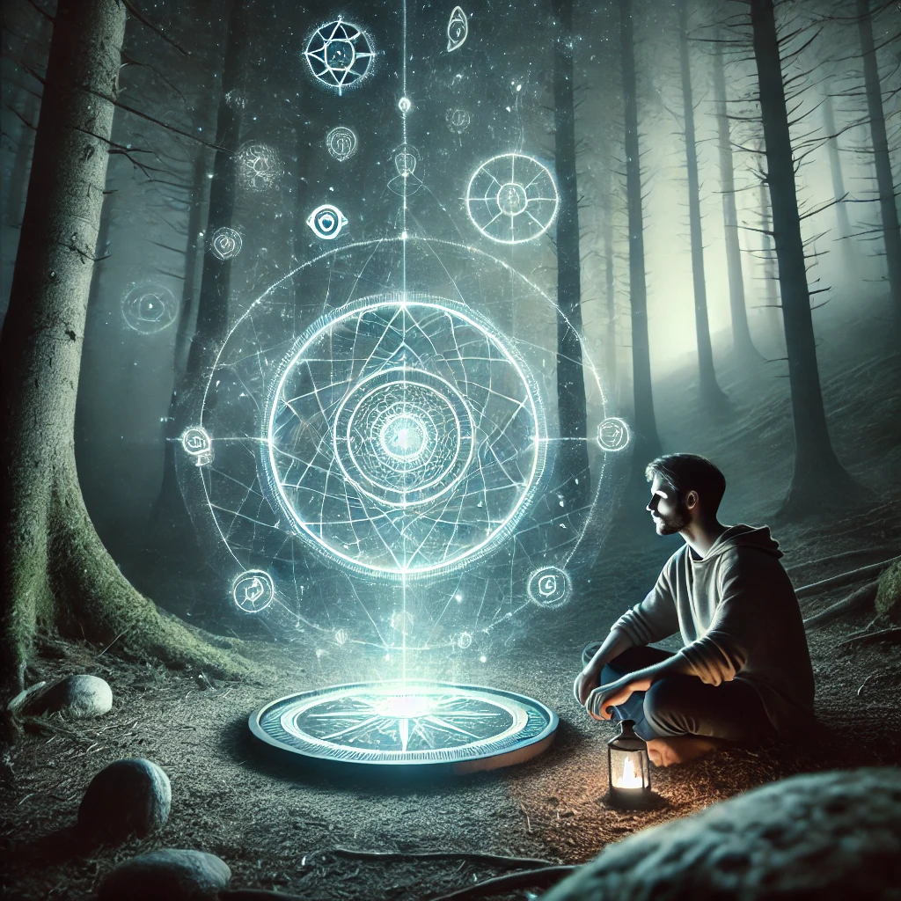

Seated in the stillness of the forest, you focus intently on the glyphs etched into the compass. Their faint glow pulses in rhythm with your heartbeat, as if responding to your energy. The patterns seem to shift and evolve, revealing layers of meaning hidden beneath their surface.
As you decipher each symbol, flashes of insight fill your mind—visions of interconnected realms, forgotten knowledge, and universal truths. The compass feels alive in your hands, a conduit for understanding the mysteries of existence.
“The glyphs are not just words,” a voice whispers from within. “They are a bridge to understanding. Each one carries a choice, a lesson, and a story. What will you focus on?”
The symbols shift again, inviting you to direct your attention to specific aspects of their meaning.

What will you focus on?